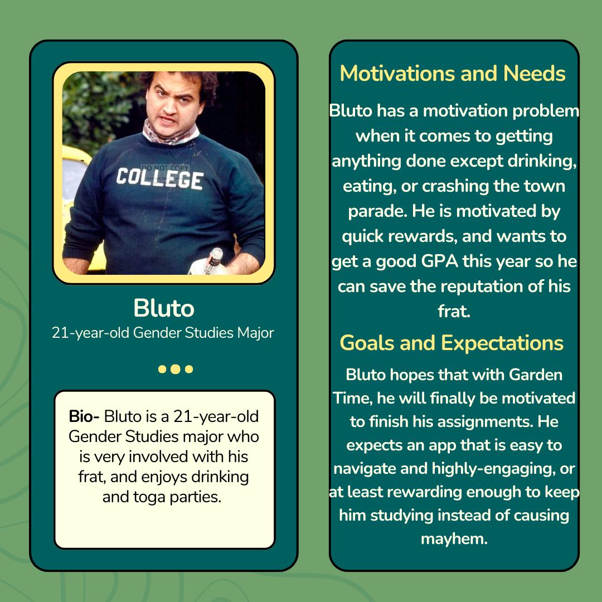
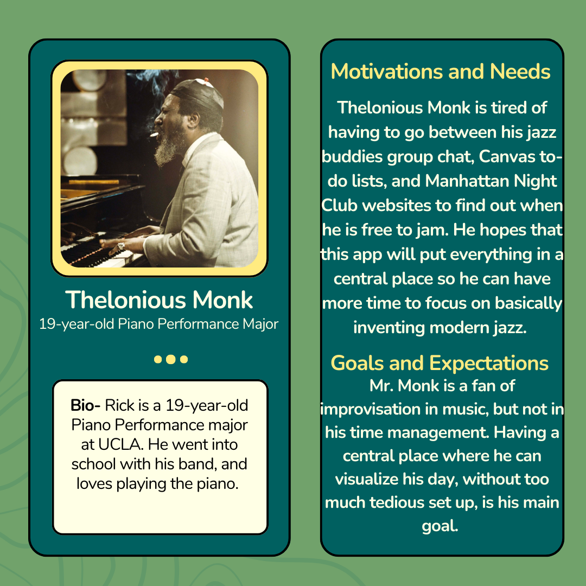

Garden Time üå∑
Home Page
Team Members:
Bella Brannon, Emily Calkins, and Kelly Yu
Description:
This is our work for Assignment 2 for Digital Humanities 110: User Interface and Design.
Brainstorm
- Cross-app tracking so you get points when you use email and subtract points for Instagram.
- Make users invested in the app like a point system/game (plant/garden, gamification).
- Communication across users (like when 2 meet) to request a time. Shows friends when you are busy but don’t share what you are actually doing
Imports to-do list from Canvas, email, text
- Habit tracker for more personal accomplishments
- Reminders like what get from the grocery store
- Randomized quotes and affirmations
- Mood tracker and daily reflections that are compiled into a display at the end of the month to track productivity and mood. That the questionnaire is not too overwhelming and the responses are not mandatory, customized questions. Different questions as to not get competitive
Process:
1. Idea proposal
Description
Garden Time is the newest time-management app that rewards you for being on top of your daily schedule. Garden Time imports your to-do lists from other apps, includes a personal habits tracker, and allows you to schedule meetings all in one place. Garden Time also incorporates gamification. Users can earn points by completing their tasks on time, and use these points to grow plants and unlock plants at new levels for their garden. They can also earn bonus plants by completing challenges.
Application Functionality
The main screen of the app will be a garden, where the user can set goals and select a plan that best supports those types of goals. For instance, a user can select an academic plan and set a goal to complete a research paper by Wednesday. If a user doesn’t complete their goals, a plant will not grow or even die. There will be separate plans with unique features, such as an academic plan that allows users to import work from Canvas and other educational platforms, a work plan that allows users to import tasks and meetings from their emails and other communication platforms, a workout plan that pairs with health applications like Apple Fitness to track fitness goals, or a productivity plan for users who wishes to set goals like to not be on social media.
Information Architecture
Information will ideally be imported from other apps, so that Garden Time centralizes all information in one place for its users. The time-based features will be organized into a calendar, where users can see what is planned for each day and review what they’ve completed in the past. Users can customize and use default notifications, such as 5, 3, and 1 day reminders for big assignments. For features that do not have a deadline, like grocery or reading lists, there will be a separate section in the app where this is accessible.
User Personas


User Journeys
How will this application help college students?
By centralizing all their tasks and events and incorporating organizational features, students can effectively schedule their workload without missing anything important. One thing we learned from our user research interviews (introduced at the bottom of this page), we learned that students commonly struggle with getting into the flow. So, different from general time management platforms, we chose to incorporate gamification to incentivize students to want to put in the work to meet their goals and mindfulness to offer students resources to reflect and take care of themselves. Successful games draw users to keep challenging themselves (i.e. to beat their highest scores). We want to create a similar reward system to make work feel less like work, but more like a game.
Feedback/Critique
- This idea could be helpful in theory, but if not everyone in your circle is using Garden Time, the meeting and social features will feel forced.
- The information is structured in a way that is hard to navigate, and the grocery lists/ to-do lists don't really align with the calendar-based features.
2. Review the design of existing time management tools, both digital and analog.
Google Calendar
Pros:
- Comprehensive set of features to create an event (i.e. time, time zone, recurrence(s) of event, calendar type, guest invites, built in meeting links, notifications, attachments, and descriptions).
- Intuitive design for each feature (i.e. time indicated with clock icon, recurrences indicated with looping arrow, meeting links with video icons)
Easy to understand how to use and where to find the features I want to set up my event reminder with.
- Search feature to find events by keywords in event titles.
- Customizable notifications; can personalize the notifications based on how long I generally take to get ready.
- Customizable repeats of events; useful for scheduling classes for one quarter that reoccur on a unique basis and ending on a particular date
Cons:
- Lots of scrolling since all features are presented in one screen. Application could be overwhelming for users who are not sure what they need or feel that they only need a few features.
- Lots of jumping between different screens. For instance, changing the number of repeats for an event takes me through at least 3 screens; one to select to repeat, one to select a default or customize a repeat, and another to customize the repeat.
The user flow is not lengthy, so seeing everything in one screen and being able to edit each section while seeing what I previously selected feels more flexible to use.
When2Meet
Summary: When2Meet is a website teams often use to find the best time to meet, where they create a calendar-based survey to see who is available at what time. Multiple people can collaborate on it, and there are adjustments for different times and dates available.
Pros: When2Meet is helpful because you can visualize large chunks of time when people are available/ unavailable and make judgements based on that. Teams can send out a link and see it updated live, as well as visualize who is available at what time.
Cons: Answers on When2Meet cannot be changed once logged in unless someone makes an account, and it has to be manually checked and updated, so there are no notifications when everyone on a team is finished. It doesn't opt for communication, only inputting times, so if someone wants to clarify what they may be doing at a certain time, they are not able to.
(Physical) Agenda/Habit Tracker
Pros:
- Has both monthly calendar and weekly agenda, broken up by the hour.
- Each month/week is unmarked so if you skip a week you do not have to waste any pages.
- Has a space for a daily and weekly focus.
- Has space to write “good things that happened” this week/month.
- Has inspirational quotes for each week. Has two to-do lists one for personal goals and one for work.
- Has an empty space for notes on the weekly agenda.
- Has a monthly reflection and a bi-annual long-term goal mapping page. Has a built-in bookmark to help users flip to the right page and an elastic band to keep the agenda closed.
- Can put stickers to motivate you and add colors to make it more customizable.
Cons:
- You have to write in your schedule every week even if it is the same.
- Have to carry it around with you which takes up space in your backpack.
- Does not send you reminders since it is a physical notebook.
3. Interviewing students about their time management tools and habits.
Interview Questions:
- What type of time management tools do you use? Please specify if you use physical or digital tools.
- What aspects of the apps/tools are most helpful for you?
- What would you add or improve these tools?
- What motivates you to get things done and stay consistent with your habits?
- Do you have notifications for your online agenda/calendar?
Response #1: Varuni, UCLA student majoring in Biology
- Google Calendar.
- Being able to block off chunks of my time and visually see when I'm available or not available.
- I would improve on the options for color because there are only a few to choose from.
- Aside from having a routine, knowing my deadlines really helps me stay on top of what needs to be completed.
- I do have notifications. Depending on the activity, I set it to alert me 10-30 minutes before the event (i.e. class would be 10 and a meeting would be 30).
Response #2: Sage, UCLA student majoring in Sociology
- Sage mostly uses apps to stay on track because her phone is easily accessible. The apps she uses are Notion, Google Calendar, and reminders.
- Notion is helpful because it's customizable. I can tailor it to what works best for my needs, and what I like is having a checklist for each day of the week and then an additional checklist for the long term as well as folders for each of my current classes. Google calendar allows me to visualize my entire week. The reminders function is also helpful because it prevents me from forgetting things. And then for the Apple reminders app, I don't use it too often but it's good when I have something that's a little bit further out and I wanna make sure I don't forget so I'll add it to my calendar and apple reminders a couple days prior.
- Add a mini game and meditation options so people can have a study break and add a pomodoro study timer and suggest playlists.
- What motivates me to get things done is being able to reflect over everything I accomplished that day. So if I'm able to see everything I got done that day or week, I feel rewarded.
- Yes.
Response #3: Owen, UCLA student majoring in Applied Mathematics
- Big assignments and exams on Google Calendar. He doesn't have any time management tools. Hhe just works when he feels like it.
- N/A.
- Punishment system if you don't get something done.
- If he's supposed to do it.
- Has calendar notifications on but doesn't create events himself he just subscribes to schedules that others (like clubs) have created.
Response #4: Kevin, UCLA student majoring in Biology
- Post-it notes. Don't like Google Calendar bc it's too easy to get distracted. Conditioned reaction to go to YouTube when he uses a calendar online.
- N/A.
- Change display for more quick thoughts like post it notes. Notebooks are too hard to store and carry around. Making google calendar more accessible and navigable. It's nice to be able to share schedules with others.
A reward system for completing tasks. Todo list like on Canvas but on your phone that are active notifications like text message so it looks more urgent. Doesn't like that you have to put so much effort into even accessing your homework on Canvas.
- Urgency motivates; a deadline; looking at the bigger picture (where I want to go and this is a small step to where I want to be); working with other people and talking about it.
- Canvas notifications in, post it's on computer. Starting is hard but the flow is easier once you have already started.
Response #5: Masha, UCLA student majoring in Computer Science
- Big exam and homework in a Google Calendar a day before so she does it. When she feels overwhelmed, she draws a calendar in her notebook for the week and fills it out.
- N/A.
- If the calendar knew my routine and if there was a task the calendar would put in randomly in a time that you have free (would know not to put too much together or too much of the same thing).
- Anxiety of having things done, fear of starting. Reward system of seeing friends. Everything's planned out so I don't have to think about it.
- Has notifications turned on for Google Calendar, and Canvas.
Our Analysis:
Every one of the UCLA students interviewed has Google Calendar and notifications turned on.
They appreciate being able to see their schedule and say it's a helpful tool to keep track of deadlines and commitments.
They also use different tools to create to-do lists like the app Notion and physical Post-it notes.
One student shared that they get too distracted with an online time management program and they prefer to write their assignments on paper to keep them from opening up anything on their computer.
They would like to see more game-like aspects like rewards for productivity and more simplicity in the time management apps to help them stay motivated.
They would like to see more to-do lists on their calendar instead of just scheduling and said that it would be helpful if they got notifications for urgent assignments in a format that they couldn't ignore.
They are motivated by deadlines and by feeling accomplished as well as being able to do things for personal enjoyment without the anxiety of commitments looming over their head.